Liens et PDF selon Opquast V5
Présentation - Liens et PDF selon Opquast V5
Slide 1 sur 20 - Un bon lien ne demande pas un clic aveugle
Slide 1 - Un bon lien ne demande pas un clic aveugle
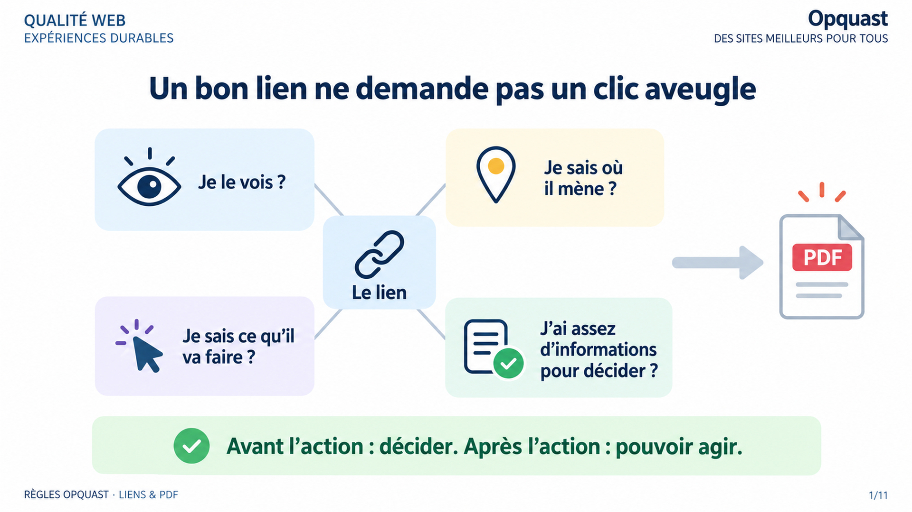
La slide est titrée « Un bon lien ne demande pas un clic aveugle ». Au centre, un lien est entouré de quatre questions : « Je le vois ? », « Je sais où il mène ? », « Je sais ce qu’il va faire ? » et « J’ai assez d’informations pour décider ? ». Une flèche conduit vers une icône de document PDF. Un bandeau vert conclut : « Avant l’action : décider. Après l’action : pouvoir agir. » Le pied de page porte « RÈGLES OPQUAST · LIENS & PDF » et la pagination « 1/11 ».
La décision commence avant le clic
- Quand la destination ou l’effet d’un lien reste obscur, il faut agir pour découvrir ce qu’il aurait dû annoncer.
- Cette incertitude peut entraîner des clics inutiles, une perte de repères ou un téléchargement subi.
- Repérer le lien, comprendre sa destination et anticiper son comportement sont des conditions qui se complètent.
- La qualité du parcours continue après le clic : le document obtenu doit aussi pouvoir être consulté et utilisé.
Transition
La première condition est simple : reconnaître le lien avant même de l’activer.
Slide 2 - Je le vois ?
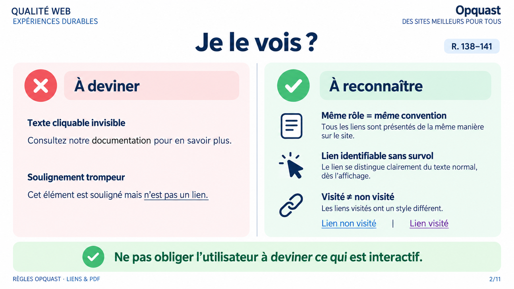
La slide « Je le vois ? » compare deux colonnes. Dans « À deviner », un lien se confond avec un texte courant tandis qu’un autre texte est souligné sans être activable. Dans « À reconnaître », trois repères sont associés à des exemples : même rôle et même convention, lien identifiable sans survol, puis distinction entre lien non visité bleu et lien visité violet. Le badge indique « R. 138–141 ». Le bandeau conclut : « Ne pas obliger l’utilisateur à deviner ce qui est interactif. » La pagination est « 2/11 ».
Reconnaître les liens sans enquête
- La répétition d’une convention permet de reconnaître les liens de même nature d’une page à l’autre.
Impact du non-respect
- Si des liens de même nature changent de présentation ou de comportement, il faut réapprendre leur fonctionnement.
- Si du texte ordinaire est souligné, il peut être pris pour un lien et provoquer des essais inutiles.
- Si le lien ne se distingue qu’au survol, certaines personnes peuvent ne jamais le repérer.
- Si l’état visité reste identique, il devient plus difficile de retrouver ce qui a déjà été consulté.
Ce que garantit la règle
- Une convention stable donne des repères constants pour les liens de même nature.
- Réserver le soulignement aux liens évite un faux signal d’interaction.
- Différencier visuellement les liens les rend perceptibles dès l’affichage, sans dépendre du survol.
- Différencier les liens visités aide à suivre le parcours déjà effectué.
Transition
Un lien repérable doit aussi expliquer où il mène ou ce qu’il permet de faire.
Slide 3 - Je sais où il mène ?
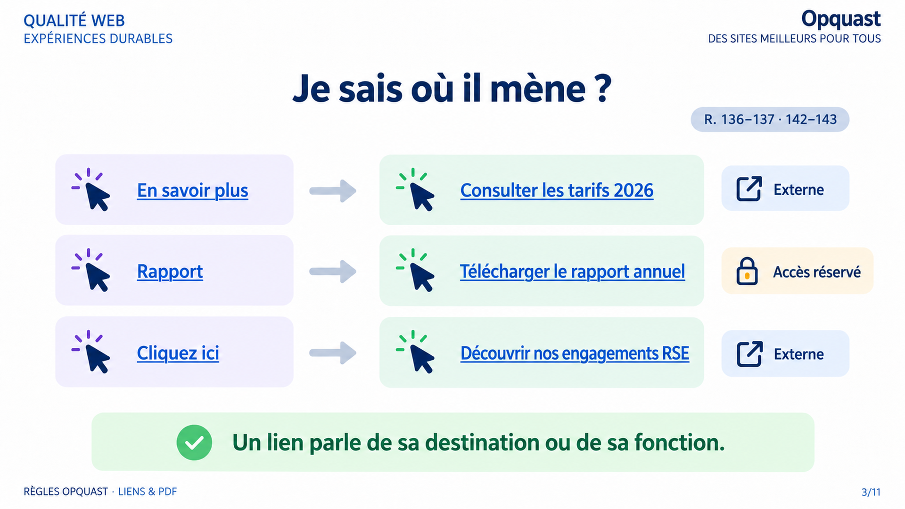
La slide « Je sais où il mène ? » présente trois transformations de libellés : « En savoir plus » devient « Consulter les tarifs 2026 », « Rapport » devient « Télécharger le rapport annuel », et « Cliquez ici » devient « Découvrir nos engagements RSE ». Les première et troisième lignes portent l’étiquette « Externe » ; la deuxième porte « Accès réservé ». Le badge affiche « R. 136–137 · 142–143 ». Le bandeau affirme : « Un lien parle de sa destination ou de sa fonction. » Le pied de page indique « 3/11 ».
Comprendre la cible avant d’agir
- Le nom du lien doit rester exploitable dans le code comme dans la lecture de la page.
Impact du non-respect
- Sans intitulé dans le code, un lien peut être restitué sans nom utile par certains outils.
- Avec un libellé vague, une liste de liens perd son sens hors du paragraphe qui l’entoure.
- Sans distinction entre interne et externe, on peut quitter le site sans l’avoir prévu.
- Sans annonce d’un accès limité, on découvre seulement après l’activation qu’un contenu interne est réservé.
Ce que garantit la règle
- L’intitulé présent dans le code permet aux outils de restituer un nom au lien.
- Un libellé qui décrit la fonction ou la cible aide à choisir la bonne destination.
- Une indication de destination externe rend le changement de site prévisible.
- Une indication d’accès limité permet de savoir qu’un contenu interne demande des droits avant de le demander.
Transition
La destination annoncée, il reste à préciser ce que l’activation déclenchera.
Slide 4 - Que va déclencher ce lien ?
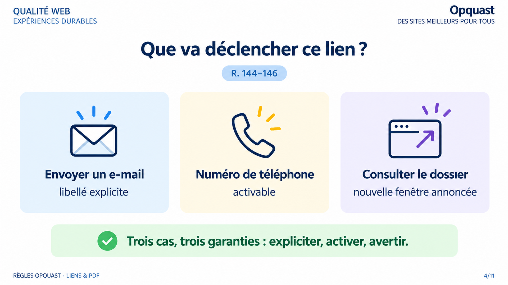
La slide « Que va déclencher ce lien ? » aligne trois cartes. La première, avec une enveloppe, indique « Envoyer un e-mail » et « libellé explicite ». La deuxième, avec un téléphone, indique « Numéro de téléphone » et « activable ». La troisième, avec une fenêtre et une flèche, indique « Consulter le dossier » et « nouvelle fenêtre annoncée ». Le badge affiche « R. 144–146 ». Le bandeau conclut : « Trois cas, trois garanties : expliciter, activer, avertir. » Le pied de page porte « 4/11 ».
Trois effets à traiter séparément
- Une activation peut lancer une application, déclencher un appel ou ouvrir un nouvel espace de navigation.
Impact du non-respect
- Si l’ouverture d’un logiciel externe n’est pas explicite, une application peut se lancer par surprise.
- Si un numéro de téléphone n’est pas activable, il faut le recopier pour appeler, notamment sur mobile.
- Si une nouvelle fenêtre s’ouvre sans avertissement, la personne peut perdre ses repères de navigation.
Ce que garantit la règle
- Le libellé d’un lien vers un logiciel externe annonce son effet avant l’activation.
- L’activation d’un numéro via le protocole adapté permet de lancer directement l’appel.
- L’annonce d’une nouvelle fenêtre prévient un changement de contexte, sans interdire ce mode d’ouverture.
Transition
Un lien de téléchargement demande ensuite d’autres informations pour permettre un choix éclairé.
Slide 5 - Télécharger sans surprise
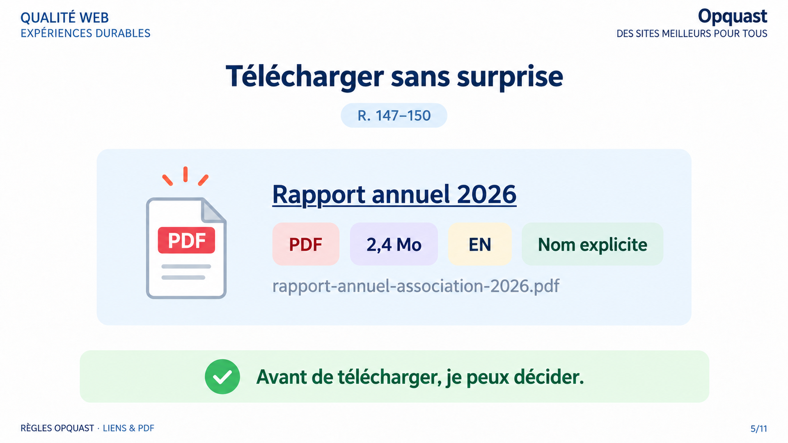
La slide s’intitule « Télécharger sans surprise » et porte un cartouche mentionnant les règles 147 à 150. Une grande carte présente une icône PDF et le lien souligné « Rapport annuel 2026 ». Quatre indications sont associées au document : « PDF », « 2,4 Mo », « EN » et « Nom explicite ». Le nom de fichier « rapport-annuel-association-2026.pdf » apparaît sous ces indications. Le bandeau vert indique : « Avant de télécharger, je peux décider. » Le pied de page identifie la série « RÈGLES OPQUAST · LIENS & PDF » et affiche « 5/11 ».
Les informations utiles avant un téléchargement
Ces renseignements peuvent être fournis de plusieurs façons. L’enjeu est de pouvoir les connaître au moment de décider.
Impact du non-respect
- Sans indication du format, une personne peut télécharger un fichier que ses outils ne lui permettent pas de consulter.
- Sans indication de la taille d’un fichier interne, elle ne peut pas anticiper la quantité de données à récupérer ni choisir le bon moment.
- Si la langue diffère de celle de la page sans être annoncée, elle peut télécharger un document qu’elle ne comprend pas.
- Un nom de fichier interne opaque complique son identification une fois le document enregistré.
Ce que garantit la règle
- Le format connu aide à décider si le fichier pourra être ouvert avec les outils disponibles.
- La taille connue permet de différer le téléchargement, notamment en mobilité ou avec une connexion limitée.
- La langue annoncée lorsqu’elle diffère de celle de la page évite une mauvaise surprise sur le contenu.
- Un nom qui indique le contenu et la provenance permet de retrouver et de distinguer le fichier téléchargé.
Transition
Une fois la destination et ses caractéristiques annoncées, le lien doit encore mener à une ressource disponible.
Slide 6 - Le lien doit tenir sa promesse
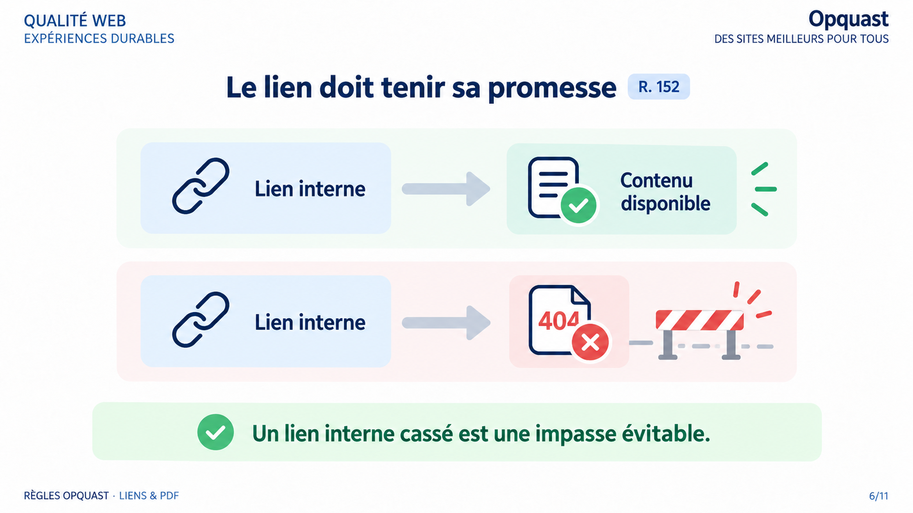
La slide « Le lien doit tenir sa promesse » compare deux parcours à partir d’un « Lien interne ». En haut, une flèche mène à « Contenu disponible » avec une coche verte. En bas, elle mène à une page « 404 » puis à une barrière. Le badge affiche « R. 152 ». Le bandeau indique : « Un lien interne cassé est une impasse évitable. » Le pied de page porte « 6/11 ».
Un parcours interne doit rester praticable
- Un lien est une promesse d’accès à un contenu situé dans le site.
Impact du non-respect
- Si la cible a été supprimée ou déplacée sans mise à jour, la personne atteint une impasse.
- Une erreur 404 interrompt la tâche et oblige à rechercher à nouveau l’information.
Ce que garantit la règle
- Vérifier les liens internes permet de maintenir les destinations disponibles.
- Après un déplacement, corriger les liens ou prévoir une redirection adaptée préserve la continuité.
- Cette règle porte sur les liens internes ; la disponibilité d’un site externe dépend aussi d’un tiers.
Transition
Une destination disponible ne suffit pas si le document atteint reste difficile à utiliser.
Slide 7 - Le clic n’est que la moitié du parcours
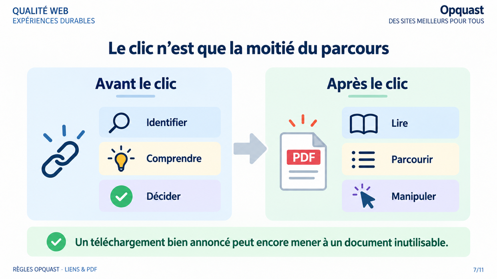
La slide « Le clic n’est que la moitié du parcours » sépare « Avant le clic » et « Après le clic » par une flèche. À gauche, près d’une chaîne, trois actions sont listées : « Identifier », « Comprendre », « Décider ». À droite, près d’un document PDF, figurent « Lire », « Parcourir » et « Manipuler ». Le bandeau avertit : « Un téléchargement bien annoncé peut encore mener à un document inutilisable. » Le pied de page indique « 7/11 ».
Le document prolonge la promesse du lien
- Un lien peut annoncer correctement le format et les caractéristiques d’un fichier.
- Cette information aide à décider, mais elle ne dit pas encore si le contenu sera exploitable.
- Après l’ouverture, il faut pouvoir lire le texte et parcourir la structure du document selon ses besoins.
- Un document peut s’afficher à l’écran et rester fermé à certains usages ; le parcours se juge donc au-delà du clic.
Transition
Le premier point à examiner dans un PDF interne est la présence de texte réellement sélectionnable.
Slide 8 - Un PDF visible peut rester inexploitable
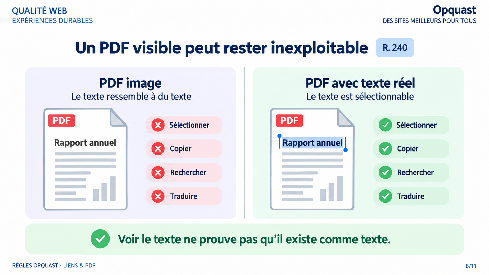
La slide « Un PDF visible peut rester inexploitable » juxtapose deux documents intitulés « Rapport annuel ». À gauche, « PDF image » affiche « Le texte ressemble à du texte » ; quatre croix accompagnent « Sélectionner », « Copier », « Rechercher » et « Traduire ». À droite, « PDF avec texte réel » affiche « Le texte est sélectionnable » ; un passage est sélectionné en bleu et les quatre actions portent une coche. Le badge est « R. 240 ». Le bandeau affirme : « Voir le texte ne prouve pas qu’il existe comme texte. » Le pied de page indique « 8/11 ».
Du texte affiché au texte manipulable
- Un scan peut ressembler à un document textuel tout en ne contenant que des images de mots.
Impact du non-respect
- Sans texte sélectionnable, copier un passage ou rechercher une expression peut devenir impossible.
- La traduction et l’utilisation par certains outils d’assistance peuvent être fortement entravées.
Ce que garantit la règle
- La présence de texte sélectionnable dans un PDF interne rend ces manipulations possibles.
- La sélection constitue un contrôle concret de cette propriété, sans prouver à elle seule l’accessibilité complète du PDF.
Transition
Le texte réel doit ensuite être organisé pour que l’on puisse parcourir le document.
Slide 9 - Un PDF doit aussi se parcourir
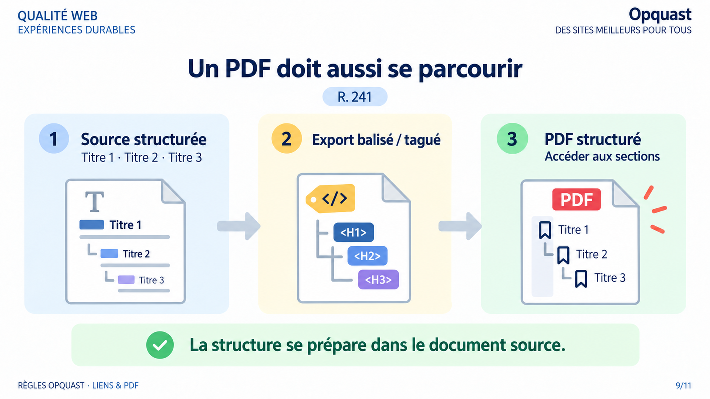
La slide « Un PDF doit aussi se parcourir » montre un flux en trois étapes. « Source structurée » présente des titres hiérarchisés « Titre 1 · Titre 2 · Titre 3 ». Une flèche mène à « Export balisé / tagué », puis à « PDF structuré » et « Accéder aux sections », illustrés par un panneau de titres. Le badge affiche « R. 241 ». Le bandeau conclut : « La structure se prépare dans le document source. » Le pied de page indique « 9/11 ».
La navigation par titres se prépare en amont
- Un texte sélectionnable ne renseigne pas encore sur l’organisation d’un document long.
Impact du non-respect
- Sans structure de titres, il peut falloir parcourir le PDF de manière linéaire pour atteindre une partie.
- Des titres seulement visibles ne donnent pas nécessairement de repères aux outils qui exploitent la structure.
Ce que garantit la règle
- Une structure de titres dans le PDF interne donne des points d’accès aux sections.
- L’usage de vrais styles de titres dans la source, puis un export qui préserve cette structure, aide à obtenir ce résultat.
Transition
Ces deux propriétés sont importantes, mais elles ne suffisent pas à qualifier tout le PDF.
Slide 10 - Deux règles ne font pas un PDF pleinement accessible
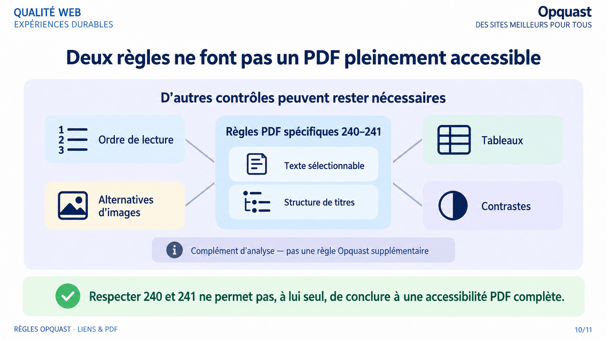
La slide est titrée « Deux règles ne font pas un PDF pleinement accessible ». Sous l’intitulé « D’autres contrôles peuvent rester nécessaires », un bloc bleu central regroupe les règles PDF spécifiques 240 et 241 avec les mentions « Texte sélectionnable » et « Structure de titres ». Des blocs reliés autour de lui citent « Ordre de lecture », « Alternatives d’images », « Tableaux » et « Contrastes ». Une étiquette distingue ce complément d’analyse des règles Opquast. Le bandeau vert indique que respecter les règles 240 et 241 ne suffit pas, à lui seul, pour conclure à l’accessibilité complète d’un PDF. Le pied de page affiche la série et « 10/11 ».
Deux contrôles utiles, une conclusion limitée
- Dans un PDF interne, le texte sélectionnable facilite sa lecture, sa manipulation et sa réutilisation.
- Une structure de titres donne des repères pour comprendre le document et accéder à ses sections.
- Ces deux propriétés ne renseignent pas, à elles seules, sur l’ordre de lecture, les alternatives des images, les tableaux ou les contrastes.
- Il faut donc garder la conclusion à la mesure des contrôles effectués : ces règles améliorent des points précis, sans certifier l’accessibilité complète du PDF.
Transition
Cette limite rejoint l’exigence commune aux liens et aux documents : préserver la capacité d’agir tout au long du parcours.
Slide 11 - Une même promesse : garder la maîtrise
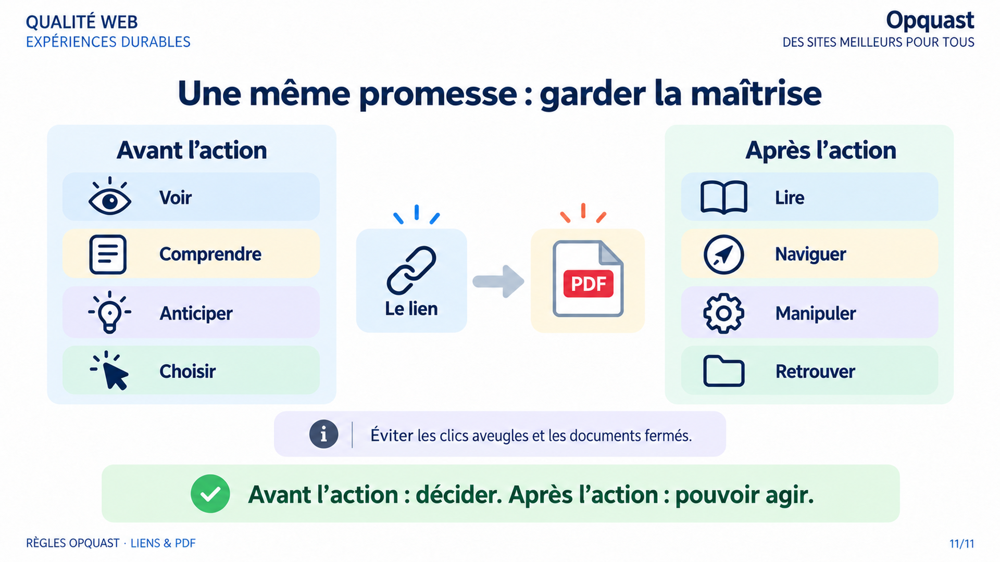
La slide porte le titre « Une même promesse : garder la maîtrise ». À gauche, « Avant l’action » réunit « Voir », « Comprendre », « Anticiper » et « Choisir ». Une flèche part d’un lien vers une icône PDF au centre. À droite, « Après l’action » réunit « Lire », « Naviguer », « Manipuler » et « Retrouver ». Sous l’ensemble figure « Éviter les clics aveugles et les documents fermés. » Le bandeau vert répète : « Avant l’action : décider. Après l’action : pouvoir agir. » Le pied de page affiche la série et « 11/11 ».
La maîtrise se joue avant et après l’action
- Un lien compréhensible donne les éléments nécessaires pour choisir de l’activer ou non.
- Un téléchargement prévisible réduit les surprises avant d’obtenir le fichier.
- Un document exploitable permet ensuite de poursuivre la lecture et la recherche d’informations.
- Ces qualités forment une continuité d’usage ; elles ne constituent pas une certification globale du service ou du PDF.
Transition
Cette continuité se retrouve dans les exigences sur les liens, les téléchargements et les documents.
Slide 12 - Liens : identifier et qualifier la destination
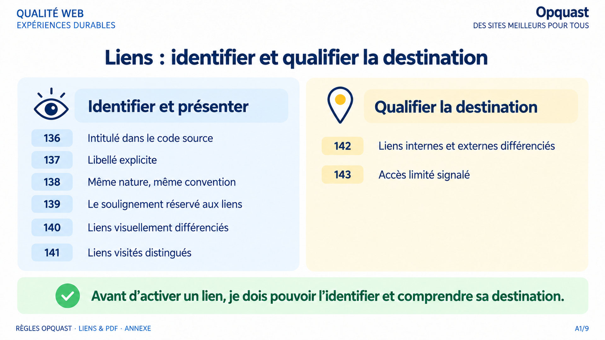
L’annexe A1 est titrée « Liens : identifier et qualifier la destination ». Le panneau gauche « Identifier et présenter » associe les numéros 136 à 141 à six formulations courtes : intitulé dans le code source, libellé explicite, même nature et même convention, soulignement réservé aux liens, liens visuellement différenciés et liens visités distingués. Le panneau droit « Qualifier la destination » associe 142 aux liens internes et externes différenciés, puis 143 à l’accès limité signalé. Le bandeau rappelle que le lien doit pouvoir être identifié et sa destination comprise avant activation. Le pied de page affiche « ANNEXE » et « A1/9 ».
Identifier le lien et sa destination
- Ces huit exigences couvrent deux moments de la décision : reconnaître l’élément activable, puis comprendre le type de destination.
Impact du non-respect
- Sans intitulé dans le code, certains outils restituent un lien sans nom utile.
- Un libellé vague ne renseigne pas sur la fonction ou la cible du lien.
- Des liens de même nature présentés différemment obligent à réapprendre les conventions.
- Un soulignement sur du texte inactif crée un faux signal de lien.
- Un lien fondu dans le contenu peut rester invisible avant le survol.
- Sans distinction de l’état visité, le parcours déjà effectué est moins lisible.
- Sans distinction entre lien interne et externe, le départ vers un autre site surprend.
- Sans indication d’accès limité, une restriction n’apparaît qu’après l’activation.
Ce que garantit la règle
- Un intitulé dans le code donne un nom exploitable au lien.
- Un libellé descriptif annonce la fonction ou la nature de la cible.
- Une convention commune stabilise la présentation des liens de même nature.
- Réserver le soulignement aux liens fiabilise cet indice.
- Une différence visuelle rend les liens repérables dans le contenu.
- Un état visité distinct indique les destinations déjà ouvertes.
- Une distinction des liens externes annonce le changement de site.
- Un signal d’accès limité permet d’anticiper une restriction interne.
Transition
La destination comprise, l’effet du lien et sa fiabilité restent à examiner.
Slide 13 - Liens : de l’action à la fiabilité
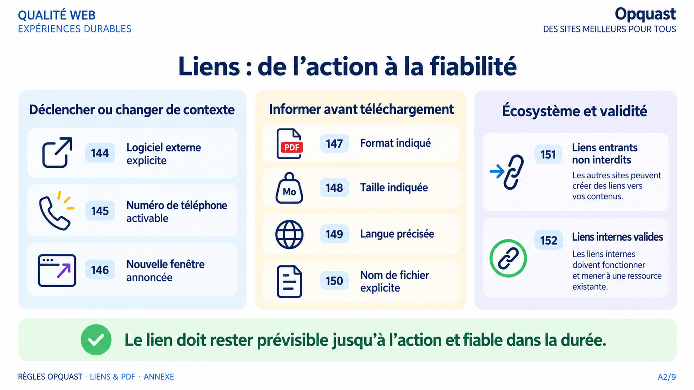
L’annexe A2, « Liens : de l’action à la fiabilité », présente trois groupes. Le premier associe 144 au logiciel externe explicite, 145 au numéro de téléphone activable et 146 à la nouvelle fenêtre annoncée. Le deuxième associe 147 au format, 148 à la taille, 149 à la langue et 150 au nom de fichier. Le troisième indique que 151 concerne les liens entrants non interdits, tandis que 152 concerne les liens internes valides. Un bandeau conclut que le lien doit rester prévisible jusqu’à l’action et fiable dans la durée. Le pied de page marque l’annexe « A2/9 ».
Prévoir l’effet et maintenir la destination
- Les effets immédiats du lien, les caractéristiques du fichier et la vie de la destination relèvent de garanties différentes.
Impact du non-respect
- Un logiciel externe peut s’ouvrir sans que son lancement soit annoncé.
- Un numéro de téléphone non activable oblige à le recopier pour appeler.
- Une nouvelle fenêtre non annoncée peut faire perdre les repères de navigation.
- Un format inconnu expose à télécharger un fichier impossible à ouvrir avec les outils disponibles.
- Une taille non indiquée pour un fichier interne empêche d’anticiper les données à recevoir.
- Une langue différente de celle de la page peut être découverte trop tard.
- Un nom de fichier opaque complique le classement et la recherche après téléchargement.
- Une restriction aux liens entrants empêche d’autres sites de pointer librement vers un contenu.
- Un lien interne invalide transforme la navigation en impasse.
Ce que garantit la règle
- Un libellé explicite annonce l’ouverture d’un logiciel externe.
- Un protocole adapté rend le numéro directement activable.
- Un avertissement annonce la nouvelle fenêtre avant l’action.
- L’indication du format aide à choisir le téléchargement.
- L’indication de taille donne une information sur le fichier interne.
- L’annonce de la langue différente prépare l’utilisateur au changement.
- Le nom du fichier interne permet d’en identifier le contenu et la provenance.
- L’absence d’interdiction ou de restriction laisse les liens entrants possibles.
- La validité des liens internes maintient l’accès aux ressources du site.
Transition
D’autres règles, situées hors de la rubrique Liens, touchent aussi le parcours.
Slide 14 - Liens transversaux : données, confiance et images
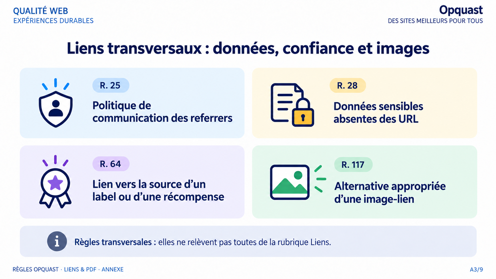
L’annexe A3 est titrée « Liens transversaux : données, confiance et images ». Quatre cartes numérotées présentent la politique de communication des referrers, les données sensibles absentes des URL, le lien vers la source d’un label ou d’une récompense, et l’alternative appropriée d’une image-lien. Les numéros affichés sont respectivement 25, 28, 64 et 117. Le bandeau inférieur précise que ces règles transversales ne relèvent pas toutes de la rubrique Liens. Le pied de page affiche « A3/9 ».
Quatre effets transversaux du lien
- Le lien transporte parfois des données, sert de preuve ou repose sur une image qui porte son nom.
Impact du non-respect
- Sans politique de communication des referrers, des informations sur la navigation peuvent être divulguées à une destination.
- Une donnée sensible placée dans l’URL peut être conservée ou transmise en clair à différentes étapes.
- Sans lien vers la source d’un label ou d’une récompense, la personne ne peut pas vérifier facilement l’affirmation.
- Sans alternative appropriée, une image-lien peut rester incompréhensible lorsque l’image n’est pas perçue.
Ce que garantit la règle
- Une politique définie dans les en-têtes encadre les informations de navigation transmises.
- Garder les données sensibles hors des URL évite leur exposition en clair dans ce canal.
- Un lien vers la source permet de vérifier soi-même la mention affichée.
- Une alternative adaptée donne un sens exploitable au lien porté seulement par une image.
Transition
Le changement de langue constitue un autre cas où le lien doit préserver les repères.
Slide 15 - Liens transversaux : internationalisation
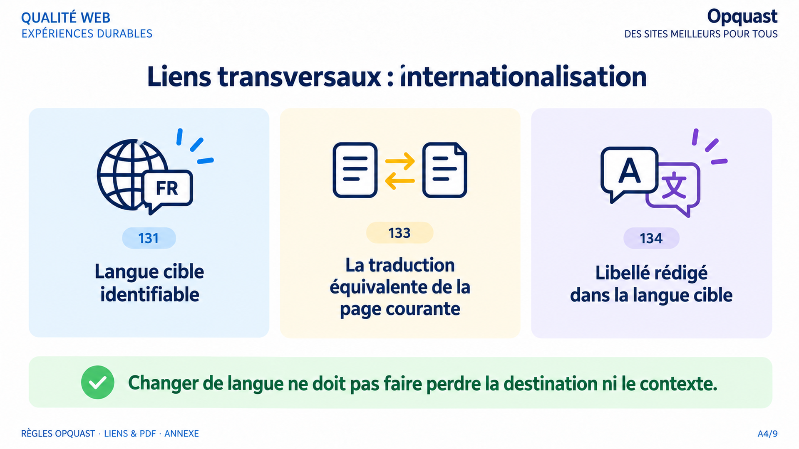
L’annexe A4, « Liens transversaux : internationalisation », présente trois cartes de gauche à droite. La règle 131 correspond à « Langue cible identifiable » ; la règle 133 à « La traduction équivalente de la page courante » ; la règle 134 à « Libellé rédigé dans la langue cible ». Le bandeau indique : « Changer de langue ne doit pas faire perdre la destination ni le contexte. » Le pied de page marque « A4/9 ».
Changer de langue sans perdre son chemin
- Le lien de traduction doit rester compréhensible avant et après l’activation.
Impact du non-respect
- Si une page cible change de langue sans annonce, la personne peut arriver sur un contenu qu’elle ne comprend pas.
- Si le lien de traduction mène à un accueil générique, le contexte de la page courante est perdu.
- Si le libellé d’une version équivalente n’est pas rédigé dans sa langue cible, le public visé peut ne pas reconnaître son choix.
Ce que garantit la règle
- L’identification de la langue cible permet d’anticiper un changement de langue.
- Le lien direct vers la traduction de la page courante maintient la même information.
- Un libellé dans la langue cible rend la version équivalente reconnaissable par ses lecteurs.
Transition
Les liens jouent aussi un rôle dans la navigation, les lettres d’information et la diffusion technique.
Slide 16 - Liens transversaux : navigation, newsletter et serveur
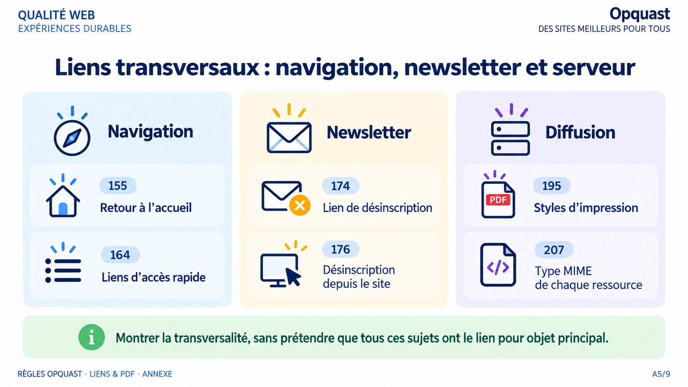
L’annexe A5, « Liens transversaux : navigation, newsletter et serveur », regroupe six entrées en trois colonnes. « Navigation » associe 155 au retour à l’accueil et 164 aux liens d’accès rapide. « Newsletter » associe 174 au lien de désinscription et 176 à la désinscription depuis le site. « Diffusion » associe 195 aux styles d’impression et 207 au type MIME de chaque ressource. Le bandeau indique que ces sujets sont transversaux et que le lien n’est pas leur objet principal dans tous les cas. Le pied de page affiche « A5/9 ».
Des parcours voisins, des objets différents
- Navigation, désinscription et diffusion technique ne se réduisent pas à la qualité du libellé d’un lien.
Impact du non-respect
- Sans retour à l’accueil depuis chaque page, une personne désorientée perd un repère majeur.
- Sans liens d’accès rapide au début du code, elle doit traverser des éléments répétitifs pour atteindre le contenu.
- Sans lien de désinscription dans chaque newsletter, quitter cet abonnement devient difficile.
- Sans désinscription depuis le site, la personne dépend de la réception d’un message pour agir.
- Sans styles d’impression, un contenu peut être mal adapté au papier.
- Sans type MIME correct, la nature de la ressource peut être mal annoncée par le serveur.
Ce que garantit la règle
- Le retour à l’accueil offre un point de repère depuis toutes les pages.
- Les liens d’accès rapide offrent des raccourcis vers les zones utiles.
- Le lien dans la newsletter permet de se désabonner depuis chaque envoi.
- La désinscription sur le site offre un second chemin pour quitter l’abonnement.
- Les styles CSS dédiés à l’impression adaptent les pages Web au papier ; cette règle ne contrôle pas la fabrication d’un PDF.
- Le type MIME déclaré permet d’identifier le type de chaque ressource servie.
Transition
Un vocabulaire précis aide ensuite à distinguer ces différentes formes de liens.
Slide 17 - Glossaire : parler précisément des liens
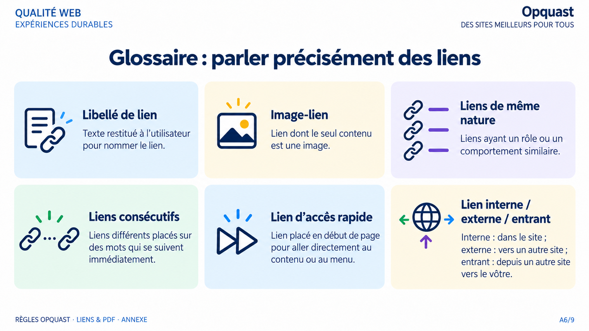
L’annexe A6 est un glossaire en six cartes. La première définit le libellé comme le texte restitué pour nommer le lien ; la deuxième définit l’image-lien comme un lien dont le seul contenu est une image. Les cartes suivantes distinguent les liens de même nature, les liens consécutifs et le lien d’accès rapide placé en début de page. La dernière oppose le lien interne, le lien externe et le lien entrant selon leur provenance ou destination. Le pied de page indique « A6/9 ».
Des mots distincts pour des contrôles distincts
- Le libellé est le nom perçu d’un lien ; il doit renseigner sur l’action ou la cible.
- Une image-lien demande une alternative appropriée lorsque l’image porte seule le sens de l’activation.
- Des liens de même nature appellent des conventions de présentation cohérentes.
- Des liens consécutifs sont différents même lorsque leurs mots se suivent immédiatement.
- Un lien d’accès rapide, placé au début du code source, raccourcit le chemin vers une zone importante de la page.
- Interne, externe et entrant situent le lien par rapport au site : dans le site, vers un autre site, ou depuis un autre site.
Transition
Les termes liés à l’URL et au PDF complètent ce vocabulaire.
Slide 18 - Glossaire : URL et PDF
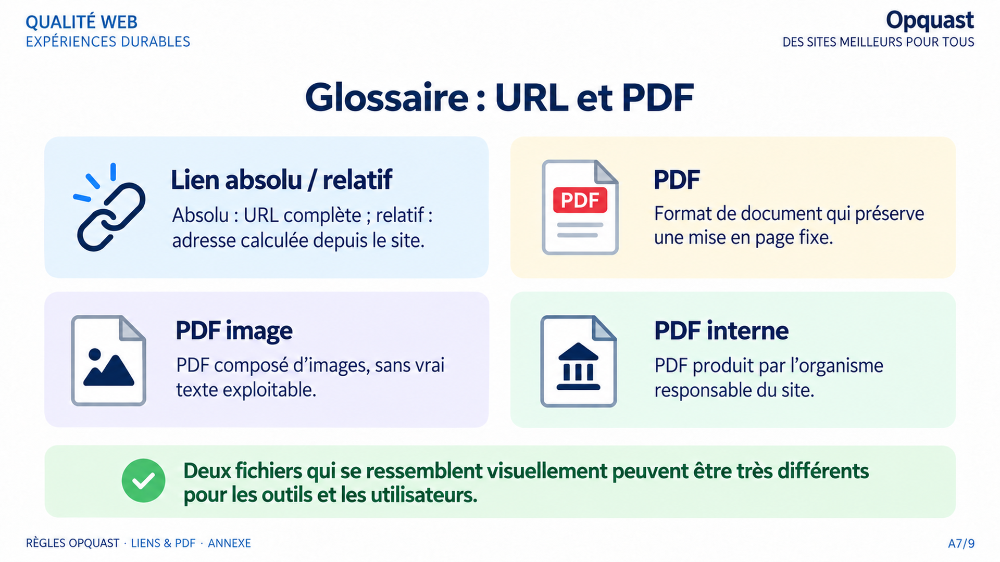
L’annexe A7, « Glossaire : URL et PDF », est divisée en quatre cartes. « Lien absolu / relatif » distingue l’URL complète de l’adresse calculée depuis le site. « PDF » est décrit comme un format conservant une mise en page fixe. « PDF image » désigne un document composé d’images sans vrai texte exploitable. « PDF interne » désigne un PDF produit par l’organisme responsable du site. Le bandeau souligne que deux fichiers visuellement semblables peuvent être très différents pour les outils et les utilisateurs. Le pied de page indique « A7/9 ».
L’adresse, le format et la provenance
- Un lien absolu contient une URL complète ; un lien relatif est résolu à partir de l’URL de base du document. La formule « depuis le site » sur la carte simplifie ce mécanisme.
- La différence d’écriture du lien ne dit pas, à elle seule, si sa cible fonctionne.
- Le PDF conserve une mise en page fixe, ce qui peut être utile, mais aussi contraindre certains usages.
- Un PDF image peut montrer des mots sans fournir de texte réellement sélectionnable.
- La carte définit « PDF interne » par son producteur. Pour les règles Opquast 240 et 241, le contrôle porte sur les PDF publiés dans le site, même lorsqu’ils ont été produits ailleurs.
- Sur ces PDF internes, le texte doit être sélectionnable et les titres structurés.
Transition
Ces deux contrôles méritent enfin d’être replacés dans les limites d’une analyse partielle.
Slide 19 - PDF : limites d’un contrôle partiel
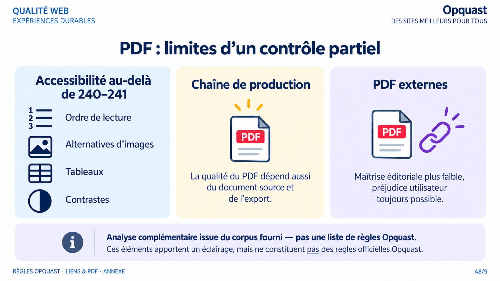
L’annexe A8, « PDF : limites d’un contrôle partiel », comporte trois panneaux. Le premier liste l’ordre de lecture, les alternatives d’images, les tableaux et les contrastes au-delà des règles 240 et 241. Le deuxième indique que la qualité d’un PDF dépend aussi du document source et de l’export. Le troisième signale une maîtrise éditoriale plus faible des PDF externes, avec un préjudice utilisateur toujours possible. Un encadré distingue explicitement cette analyse complémentaire des règles officielles Opquast. Le pied de page indique « A8/9 ».
La portée exacte des contrôles PDF
- La sélection du texte et la structure de titres sont deux propriétés précises des PDF internes.
- L’ordre de lecture peut encore gêner la compréhension lorsque le document est restitué autrement qu’à l’écran.
- Les images, les tableaux et les contrastes peuvent créer des obstacles distincts.
- La qualité finale dépend de la source et de la manière dont elle est exportée en PDF.
- Pour un PDF externe, la maîtrise éditoriale est moindre, mais le risque rencontré par l’utilisateur ne disparaît pas.
- Ces points élargissent l’analyse sans ajouter de règle au référentiel Opquast.
Transition
Avant de produire un PDF, il reste à choisir si ce format répond réellement au besoin.
Slide 20 - PDF : choisir le format avant de publier
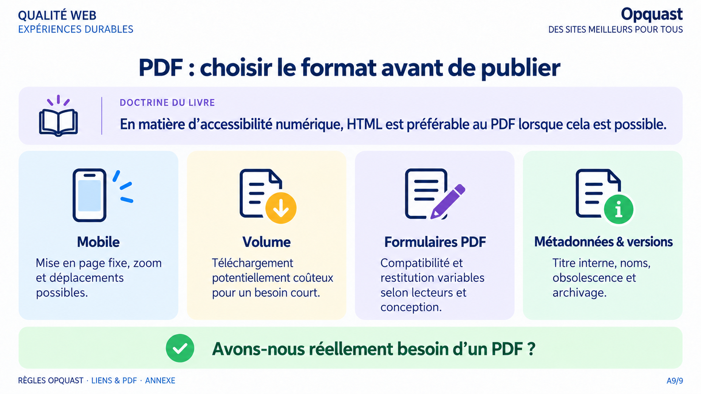
L’annexe A9 s’intitule « PDF : choisir le format avant de publier ». Un bandeau identifié « DOCTRINE DU LIVRE » affirme qu’en matière d’accessibilité numérique, HTML est préférable au PDF lorsque cela est possible. Quatre cartes présentent les points de vigilance : l’usage mobile avec zoom et déplacements possibles, le volume d’un téléchargement pour un besoin court, la compatibilité variable des formulaires PDF, puis les métadonnées et versions avec titre interne, noms, obsolescence et archivage. Le bandeau final demande : « Avons-nous réellement besoin d’un PDF ? » Le pied de page affiche « A9/9 ».
Choisir le format selon l’usage
- La préférence pour HTML lorsque c’est possible relève ici de la doctrine du livre, et non d’une règle Opquast supplémentaire.
- Sur mobile, la mise en page fixe d’un PDF peut imposer zoom et déplacements pour lire.
- Pour une information courte, obtenir un fichier entier peut représenter un téléchargement disproportionné.
- Les formulaires PDF peuvent être restitués différemment selon les lecteurs et leur conception.
- Les titres internes, les noms de fichiers et les versions demandent une attention éditoriale durable.
- Si le PDF reste nécessaire, il faut ensuite vérifier ses propriétés réelles et les besoins des utilisateurs.
Conclusion
Avant de publier, demandons-nous quel format permet le mieux de lire, de comprendre et d’agir.